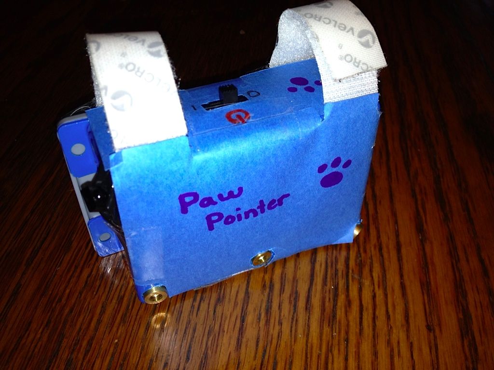

Our version 1 prototype:
How it works
1. Attach to collar
2. Three lasers
3. Controlled by remote
4. Animal will chase lasers
FAQ
- How large is it?
- Will the laser hurt my eyes?
- Is this ethical?
About us
We are a group of five cat crazy engineers at UC Berkeley.